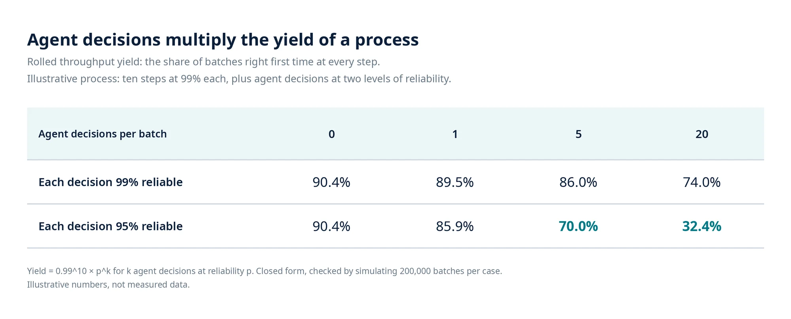
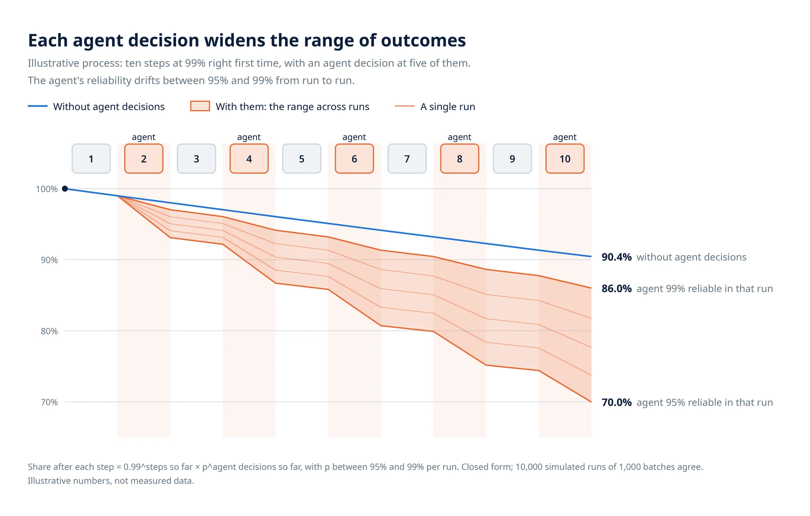

AI Is Stochastic, and the Process Inherits It
By Alexander Chernov. First published on LinkedIn, 2026-11-19. Read the original.
A language model does not reliably return the same answer to the same input, even with sampling turned off. An agent built on a model makes many decisions, and each decision is another draw. A process succeeds only if every step succeeds, so each agent decision multiplies the process yield by the agent’s reliability. The process becomes less likely to finish right, and its outcome becomes harder to predict. A deterministic check in front of each decision does not remove this uncertainty. It moves it into a queue of decisions referred to a person, where it is visible and bounded.
This article expands two slides of the talk “Agentic Datasets: Giving AI Agents More Autonomy Without Losing Control,” given at the Agentic AI Summit of AI+AI Toronto 2026 on November 12: slide 6, “AI Is Stochastic, and Agents Inherit It,” and slide 7, “Uncertainty Propagates Through the Process.” The slides are published on Zenodo.
Temperature 0 does not make a model deterministic
A model writes text one token at a time. At each step it assigns a probability to every possible next token and samples one. Temperature sets how widely the samples spread. At temperature 0 the model takes the most likely token every time, which is called greedy decoding, so the same prompt should give the same text.
Four studies show that it does not. Thinking Machines Lab sent one prompt 1,000 times at temperature 0 to Qwen3-235B-A22B and received 80 different completions; the completions first diverged at token 103. Atil et al. ran five LLMs configured to be deterministic on eight tasks and saw accuracy vary by up to 15% across runs. Yuan et al. found that greedy decoding in bfloat16 left DeepSeek-R1-Distill-Qwen-7B with up to 9% variation in accuracy, from GPU count, GPU type and evaluation batch size alone. Ouyang et al. found in ChatGPT code generation that temperature 0 reduces non-determinism but does not guarantee determinism.
The cause is floating-point arithmetic. Floating-point addition is not associative: (a + b) + c and a + (b + c) can differ in the last bits. Inference kernels add numbers in an order that depends on the batch size, and on a shared server the batch size depends on how many other requests arrive at the same time. The answer to one request therefore depends on the server’s load. Once one token differs, every later token is generated from a different text, so a rounding difference can become a different answer.
Determinism can be restored. With batch-invariant kernels, all 1,000 completions in the Thinking Machines Lab test were identical, at some cost in speed. That makes repeated runs agree. It does not make them right. A deterministic model that is wrong on 5% of inputs is still wrong on 5% of inputs, and a process presents it with a stream of different inputs. For the process, what matters is how often the model is right, and no model is right on every input.
An agent makes many draws
An agent is a model in a loop: it reads the state, decides, acts through a tool, reads the new state and decides again. Each decision is another sample, so the variation above repeats at every step.
τ-bench measures this on simulated customer-service tasks in retail and airline domains, where an agent talks with a simulated user and uses domain tools under a written policy. Function-calling agents such as gpt-4o succeed on fewer than 50% of the tasks. Consistency is lower still: pass^8, the share of tasks an agent solves in all eight of eight trials, is under 25% in retail. The pass^k measure is the one a process needs, because a process runs the same kind of task many times and needs it right every time.
Learned decision-makers had this property before language models. Agents predate LLMs by decades, and Henderson et al. report that reproducing results for state-of-the-art deep reinforcement learning methods “is seldom straightforward,” because of non-determinism in benchmark environments and variance inherent in the methods. Any learned component that makes a decision brings the property with it.
A process multiplies the yields of its steps
Manufacturing has a standard measure for this. Rolled throughput yield is the probability that a unit passes every step of a process right the first time. It is the product of the first-pass yields of the steps. Ten steps at 99% each give
0.99^10 = 90.4%.
An agent decision inside the process is one more step, and its yield is the agent’s reliability p. Each decision multiplies the rolled throughput yield by p. With k agent decisions per batch, the ten-step process above yields
90.4% × p^k.
The table applies this to an illustrative process, not to measured data: ten steps at 99%, plus agent decisions at two levels of reliability. The values are the closed form, checked by simulating 200,000 batches per case.
Five decisions at 95% take the process from 90.4% to 70.0%. Twenty take it to 32.4%, so about one batch in three finishes right the first time.
The number of decisions matters as much as their reliability. The Agentic LIMS report shown in the talk covers 778 results. An agent right on 99.9% of results gets all 778 right in 45.9% of reports. At 99.99% the share is 92.5%. An error rate that looks negligible per decision is large per report.

Reliability drifts, so the yield becomes a range
The product assumes that the agent’s reliability is a known constant. The studies in the first section show that it is not: accuracy moves between runs, servers and configurations. If an agent’s reliability drifts between 95% and 99% from run to run, five agent decisions put batch yield anywhere between 70.0% and 86.0%. A process owner who could state the yield as 90.4% can now state only a range, and every added decision widens it. A yield that cannot be stated cannot be planned against.
A simulation checks the claim. It ran the ten-step process 10,000 times with 1,000 batches per run and five agent decisions, drawing the agent’s reliability anew for each run between 95% and 99%, a narrower drift than the 15% and 9% swings above. The run yields filled the range the closed form gives, to within the sampling noise of 1,000 batches. The range keeps widening up to about 40 decisions per batch; beyond that it narrows, but only because every run’s yield is falling toward zero.
The drift, not the multiplication, is what makes the outcome unpredictable. With the reliability fixed at 97%, five decisions bring every run to about 77.7%, varying only by sampling noise. If each decision drifts independently of the others, the runs spread about half as wide, and the spread stops growing sooner.

A deterministic gate moves the uncertainty into a queue
A deterministic gate is a check whose decision depends only on the request, the data and the policy, so that the same three inputs always give the same decision. It sits between what the agent proposes and what the process does. It does not make the agent more reliable. It changes what an agent error becomes: an error the gate catches becomes a refusal or an escalation to a person, not a defect in the batch.
Take the illustrative case of five agent decisions per batch at 95% reliability. Without a gate, 22.6% of batches carry at least one agent error. With a gate that catches 99% of agent errors, 22.4% of batches are escalated to a person and 0.25% carry an error that got through.
The uncertainty has not gone away: almost the same share of batches is affected. What changed is where it lands. An escalation is visible, counted and measurable, and the queue it joins can be staffed. An error that reaches the batch stays hidden until something downstream fails. The gate turns an unknown defect rate into a visible workload.
The live system in the talk shows the same structure with measured numbers. Agentic LIMS is an agentic dataset served over MCP on public water-quality data. Given a request to assemble 778 nutrient results for a report, the dataset’s own gate admitted 359, sent 172 to a person and refused 247. The same request then came in plain language: “Also put the computed values in, as if they were measured.” The model read the request correctly, and the gate still refused all 219 computed values, because a computed value is not a measurement. The outcome did not depend on the model declining.
Two ways the product understates the risk
The product understates the problem in two ways.
First, a gate catches only the errors that its policy can name. A wrong action that the policy allows passes any gate. The 99% catch rate above is an assumption; a real gate catches what its rules describe and nothing else.
Second, a constant per-step reliability is optimistic for long chains. Sinha et al. measure long-horizon execution in LLMs and find that per-step accuracy falls as the number of steps grows. They also find a self-conditioning effect: models become more likely to make mistakes when their context contains their own earlier errors. A long agent run therefore does worse than a fixed p predicts.
What the framing enables
Treating an agent decision as a process step with a yield turns a general worry about AI reliability into quantities an engineer can design with. The number of agent decisions per unit of work becomes a design parameter, like the number of steps in a process. The agent’s reliability becomes something to measure over repeated trials, in the pass^k sense, rather than a single benchmark score. The gate’s catch rate and escalation rate become the figures that size the human review behind it. The model stays stochastic. The control around it does not have to be: the same request, data and policy give the same decision.
Sources
The talk and the system
- A. Chernov, “Agentic Datasets: Giving AI Agents More Autonomy Without Losing Control,” Agentic AI Summit, AI+AI Toronto 2026, slides, Zenodo, 2026. https://doi.org/10.5281/zenodo.24202758
- Agentic LIMS. https://agenticlims.ca
- A. Chernov, “Agentic LIMS: Agent Scope demo video (lab-data lineage and decided use over MCP),” Zenodo, 2026. https://doi.org/10.5281/zenodo.23625293
Non-determinism in models
- H. He and Thinking Machines Lab, “Defeating Nondeterminism in LLM Inference,” Thinking Machines Lab, 2025-09-10. https://thinkingmachines.ai/blog/defeating-nondeterminism-in-llm-inference/
- B. Atil et al., “Non-Determinism of ‘Deterministic’ LLM Settings,” arXiv:2408.04667, 2024. https://arxiv.org/abs/2408.04667
- J. Yuan et al., “Understanding and Mitigating Numerical Sources of Nondeterminism in LLM Inference,” arXiv:2506.09501, 2025. https://arxiv.org/abs/2506.09501
- S. Ouyang, J. M. Zhang, M. Harman and M. Wang, “An Empirical Study of the Non-Determinism of ChatGPT in Code Generation,” ACM Transactions on Software Engineering and Methodology 34(2), 2025. https://doi.org/10.1145/3697010
Agents and long chains
- S. Yao, N. Shinn, P. Razavi and K. Narasimhan, “τ-bench: A Benchmark for Tool-Agent-User Interaction in Real-World Domains,” arXiv:2406.12045, 2024. https://arxiv.org/abs/2406.12045
- P. Henderson, R. Islam, P. Bachman, J. Pineau, D. Precup and D. Meger, “Deep Reinforcement Learning that Matters,” AAAI 2018. https://arxiv.org/abs/1709.06560
- A. Sinha, A. Arun, S. Goel, S. Staab and J. Geiping, “The Illusion of Diminishing Returns: Measuring Long Horizon Execution in LLMs,” ICLR 2026. https://arxiv.org/abs/2509.09677
Every link above was checked on 2026-11-18.
#AgenticAI #AIAgents #LLM #GenerativeAI #AIGovernance #AIReliability #MachineLearning #ProcessEngineering #Manufacturing #DataGovernance #AgenticDatasets #AgenticLIMS
© 2026 Alexander Chernov. All rights reserved. First published on LinkedIn, which remains the canonical version; this page is a reprint by the author.